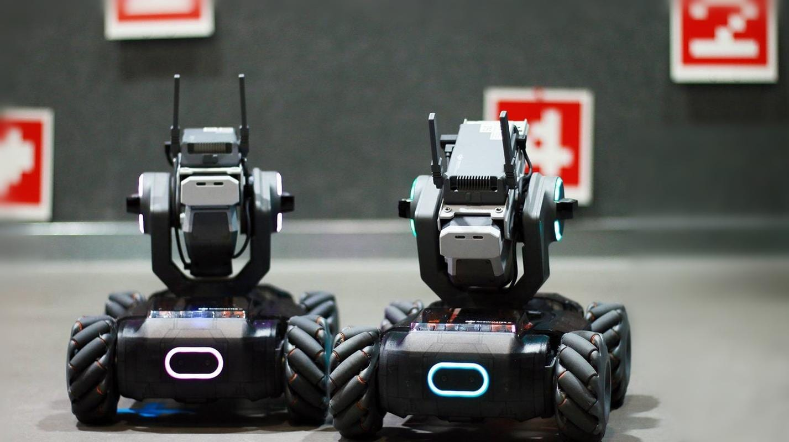

大疆 RoboMaster S1

大疆面向教育市场的模块化竞技机器人，麦克纳姆轮全向移动，云台可发射水晶弹并支持视觉识别，内置多种传感器，支持 Scratch 与 Python 编程，把游戏感与工程学习融为一体。
客观评测
RoboMaster S1 采用四轮麦克纳姆轮实现全向移动，配备可旋转云台与水晶弹发射机构，支持视觉标签识别与目标跟随；传感器含摄像头、麦克风阵列与惯性测量单元等。官方提供从 Scratch 图形化到 Python 的编程接口。电池约 2400mAh，续航约半小时量级，通过 Wi-Fi 与手机/平板连接遥控，定位为把电控、机械与算法教学包装成竞技游戏的教育机器人。
主观点评
S1 最聪明的地方是让人“为了赢比赛而学编程”：想让车跑得快、打得准，就得去调 PID、写视觉逻辑，学习动机完全内生。做工是大疆水准，开箱即玩不折腾；Scratch 拖块到 Python 的过渡也设计得顺滑。不足是价格门槛不低，水晶弹和配件是持续开销，而且玩法深度依赖官方生态。作为家庭与课堂的“编程诱饵”，它目前几乎没有同级对手。
优点与不足
- 麦克纳姆轮 + 视觉玩法，游戏化的编程驱动力强
- Scratch 到 Python 的编程梯度完整，课堂落地容易
- 大疆做工与稳定性，机械与电控调校成熟
- 整机价格较高，配件与水晶弹持续消耗
- 核心软件生态相对封闭，深度定制空间有限
参数规格
| 驱动 | 4 轮麦克纳姆轮全向移动底盘 |
|---|---|
| 动力 | 无刷电机驱动，支持速度/位置闭环控制 |
| 云台 | 可旋转发射机构，支持水晶弹发射 |
| 处理器 | 板载主控（支持 Scratch / Python 编程） |
| 传感器 | 摄像头、麦克风阵列、加速度/陀螺仪、红外/碰撞检测等 |
| 视觉功能 | 目标识别、标签识别（视觉标签）、跟随 |
| 电池 | 约 2400mAh 锂电池（10.8V 量级） |
| 续航 | 约 30-40 分钟（视玩法而定） |
| 控制方式 | 手机/平板 App、手柄遥控、Scratch/Python 图形与代码编程 |
| 通信 | Wi-Fi 连接遥控设备 |
| 模块化 | 开放电机、云台、传感器等编程接口 |
| 重量 | 约 3.3kg |